2. Section 2: Classifying¶
Classifying is the process of specifying an algorithm, called classifier, that computes a value, called class label, for a given parametrization. The labels are added to the existing database in a column with a user-defined title, called property name. The central part of classifying is a loop over a user-defined selection of parametrizations. In each iteration the current parametrization is passed to the classifier. The class label it returns is stored and the next parametrization is handed to the classifier.
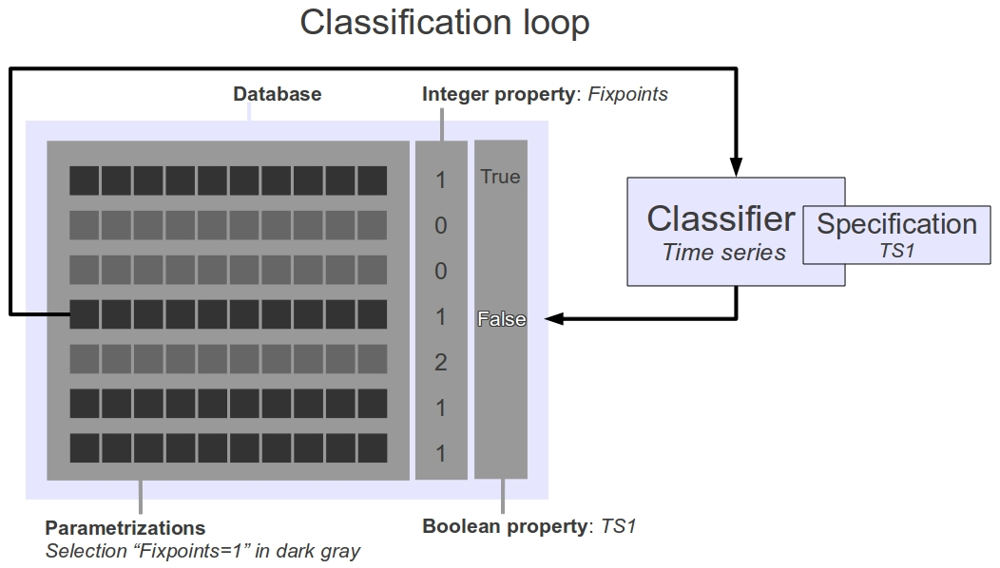Example: Suppose that the parametrizations of a project have previously been classified by the number of fixpoints in their asynchronous transition graphs. The project database therefore contains a column entitled Fixpoints with integer values. In a second step, all parametrizations with exactly one fixpoint shall be divided into the class that reproduces a time series called TS1, and the class that does not. The specification for time series TS1 together with the selection Fixpoints=1 is passed to the time series classifier, which computes Boolean labels for the porperty TS1 in the classification loop over all parametrizations in the selection.
{kind=link}
To continue work on an existing project, i.e., to classify a selection of models by a given property specification, the script continue_project.py is called. The script requires the project-name of the project to be continued, the classifier that is to be used, a selection of parametrizations that is to be classified and possibly a limit that sets the maximum number of calls of the classifier. These four inputs are specified by editing the header of the file continue_project.py:
continue_project.py:
project_name = None classifier = None selection = "all" limit = None
The script first confirms, that a project Projects/<project_name> exists and that it contains a model database <project_name>.db.
Input 1: classifier: The variable classifier must either be assigned to the name of a property file, or the name of a custom classifier. A property file is a text file that contains a property description for one of the three classifiers that are delivered with the tool: model checking, trap set search, time series existence. A custom classifier is a Python script that computes class labels for models. Its property description is hard-wired into it by the author of the script. A detailed description of the interface between continue_project.py and custom classifiers is given in Section: Custom Classifier.
Input 2: selection: The variable selection defines which parametrizations ought to be classified in this run. It is a Boolean expression over the predicates of Appendix B: Parameter Constraint Language, but also includes SQL statements over class labels already attached to the parametrizations:
Selections
selection ::= selection_atom | 'not' selection | selection 'and' selection | selection 'or' selection selection_atom ::= constraint | property property ::= hmm
If the value of selection is None, then all parametrizations without a label will be classified.
Input 3: limit: The variable limit is either set to None, in which case the classification loop will continue until all parametrizations are labeled, or if an integer is assigned to it, the loop stops after limit iterations.
In the next sections we will discuss:
Contents of Section 2
2.1. Model Checking¶
Any state transition graph, whether synchronous, asynchronous, unitary or non-unitary, can naturally be interpreted as a transition system for model checking. Recall Appendix A: Asynchronous dynamics for definitions of the state transition graph, and [Bernot04] for a discussion of model checking in the context of regulatory networks. A model checking specification file is a text file, that contains a formula: either a linear time logic formula, i.e., LTL, or a computational tree logic formula, i.e., CTL, a description of the initial states in form of a subset term, the search type, a property name, a property description and two values specifying the type of dynamics to be considered.
The model checking classifier divides parametrizations into two classes: those whose dynamics satisfy the specification, denoted by the class label True and those whose dynamics do not satisfy the specification, denoted by class label False. The dynamics of a parametrization satisfies a specification if there is a state among the initial states (search type exists), or all initial states (search type forall), satisfy the temporal formula. A formula may be either a LTL or CTL formula. Both languages and conditions under which a state satisfy a formula are discussed in, e.g., [Baier08].
We use the NuSMV v2.5 symbolic model checking software to decide whether the formula holds. The path to the NuSMV executable must be specified in the text file preferences.py by replacing None with the path string:
preferences.py:
nusmv_path = NoneModel checking specification file
model_checking_file ::= model_line name_line desc_line unit_line sync_line init_line search_line spec_line model_line ::= 'classifier = nusmv model checking' name_line ::= 'property_name =' name desc_line ::= 'property_description =' description unit_line ::= 'unitary =' bool sync_line ::= 'synchronous =' bool init_line ::= 'initial_states =' selection search_line ::= 'search = ' ('exists' | 'forall') spec_line ::= ('ctl' | 'ltl') '_spec =' `temporal logic formula` bool ::= 'true' | 'false' description ::= {name | ' '}
- Example of a model checking specification file:
# Comments begin with a hash classifier = nusmv model checking property_name = RpoS property_description = Is the entry into stationary phase always preceded by the accumulation of the stress response regulator RpoS? unitary = true synchronous = false initial_states = v1=0 and (v2>0 or v3=2) ctl_spec = EF(Xrrn=0) & !E(Xrpos>0 U Xrrn=0)
2.2. Trap Set Search¶
Often, we want to divide the parametrizations of a regulatory network into two classes: the one whose dynamics stabilizes within a rectangular region of state space, denoted by class label True, and the one whose dynamics does not stabilize in that region, denoted by class label False. The trap set search classifier performs this task: it decides for a given rectangular region and parametrization, whether the transition graph contains a trap set in the region or not. Recall, that a subset 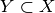 of states of a transition graph 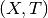 is called trap set, if 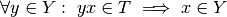. A rectangular region, or box for short, is defined by a function 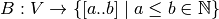 such that 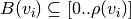, where 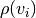 is the maximal activity of  (see Appendix A: Regulatory graph for definitions). The interval 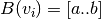 is called box interval. A transition graph belongs to the stabilizing class, if there is a trap set 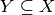, such that 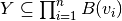 is inside the box.
(see Appendix A: Regulatory graph for definitions). The interval 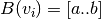 is called box interval. A transition graph belongs to the stabilizing class, if there is a trap set 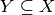, such that 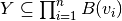 is inside the box.
A trap set specification file is a text file that specifies the box intervals of each component. If the box interval of a component is equal to its activity range, the interval may be omitted.
- Example of trap set specification file:
# Comments begin with a hash classifier = trapset property_name = t1 property_description = Is there a trap set with Xyrn=0, Xrrn>0 and Xppn>1? box = Xrrn[1,2], Xryn[0,1], Xccn[2], Xyrn[0], Xppn[2,3]
2.3. Time series¶
Time series specification file
time_series_file ::= time_line name_line desc_line measurement_line measurement_line+ time_line ::= 'classifier = time series' name_line ::= 'property_name =' name desc_line ::= 'property_description =' description measurement_line ::= measurement {' ' measurement} measurement ::= mon_measurement | not_mon_measurement mon_measurement ::= name '[' integer ']' not_mon_measurement ::= name '(' integer ')'
- Example of a time series specification file:
classifier = time series property_name = timeseries1 property_description = Is the time series reproduced? Xrrn[1] Xryn(0) Xccn[2] Xyrn[0] Xppn(2) Xrrn[1] Xryn(0) Xccn(2) Xyrn[0] Xppn(3) Xrrn[0] Xryn(0) Xccn[1] Xyrn[0] Xppn(2)
2.4. Custom Classifier Interface¶
A custom classifier is an implementation of an algorithm in Python, that computes class labels for parametrizations. It is a class that contains information about the property that is investigated, i.e., a short name stored in Classifier.property_name, that is used as a column title in the database, the data type of the property stored in Classifier.data_type and a text description of the property stored in Classifier.property_description. The classifier is instantiated and passed to continue_project.py where its interface methods are called repetitively during the classification loop. We discuss the interface methods in detail below.
For convenience, a Python object called Model is passed to the classifier on instatiation. A model has a number of methods that facilitate querying the current parametrization for target values and transitions. It also contains data to obtain information about the associated regulatory graph. Once every iteration, the classification loop will update the model by replacing the old with the current parametrization, and call the first interface method, compute_label(), of the custom classifier. This method must return the label for the current parametrization. If the classifier computed constraints that are sufficient to imply certain class labels, it should return them via the second interface mathod, Classifier.sufficient_constraints(), in form of a list of tuples consisting of (constraint, label). For every tuple, all unlabeled parametrizations that satisfy the constraint will be assigned the label - without being explicitly passed to the classifier. This may speed up classifying, because many parametrizations may be labeled at once. Finally, continue_project.py calls Classifier.priorities(), the third interface method, to inquire a constraint that the next unclassified paramatrization should satisfy. continue_project.py will then attempt to find an unlabeled parametrization that satisfies this priority constraint.
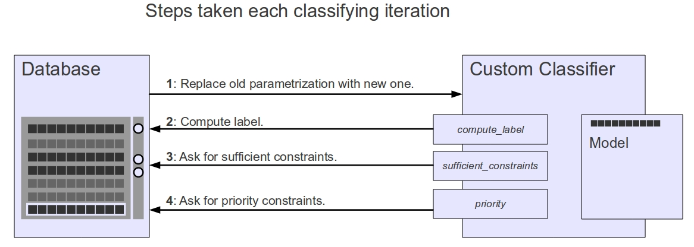{kind=link}
2.4.1. Property Specifications¶
- Classifier.property_name¶
(String) A short name that is used as a column header in the parametrization database.
- Classifier.property_description¶
(String) A text describtion of the property.
- Classifier.data_type¶
(String) A description of the data type of the class labels. Allowed types are 'string', 'integer' and 'boolean'.
2.4.2. The Loop Interface¶
- Classifier.compute_label()¶
Returns: The label for the current parametrization. Return type: String
- Classifier.sufficient_constraints()¶
Returns: Sufficient constraints and labels that are used to do bulk labeling. All non-classified parametrizations, that satisfy one of the constraints will be assigned the corresponding label. Return type: List of tuples Each tuple in the return list consists of a constraint string and a label string. If no sufficient constraints could be obtained, an empty list should be returned.
- Classifier.priorities()¶
Returns: A constraint that describes parametrizations that are preferred in the next classification iteration. Return type: String If the classifier has no priority, an empty string should be returned.
2.4.3. Inquiries about the Regulatory graph¶
The Model class provides several attributes for inquiring the regulatory graph of the project.
- Model.components¶
(Tuple of strings) Sorted tuple of the component names.
Model.components >>> ('v1','v2')
- Model.regulators¶
(Dictionary) Components are keys and sorted tuple of regulators are values.
Model.regulators >>> {'v1':('v1','v2'), 'v2':('v1','v2')}
- Model.targets¶
(Dictionary) Components are keys and sorted tuple of targets are values.
Model.targets >>> {'v1':('v1','v2'), 'v2':('v1','v2')}
- Model.thresholds¶
(Dictionary) Interactions are keys and sorted tuple of thresholds are values. Interactions are tuples consisting of components.
Model.thresholds >>> {('v1', 'v2'): (1, 2), ('v1', 'v1'): (1,), ('v2', 'v1'): (1,), ('v2', 'v2'): (2,)}
- Model.maxactivity¶
(Dictionary) Components are keys and maximal activities are values.
Model.maxactivity >>> {'v1': 2, 'v2': 2}
2.4.4. Inquiries about the Current Parametrization¶
Description of methods for inquiring the transition graph of the current parametrization. Examples are given for the running example.
- Model.asynchronous_successors(State)¶
Parameters: State (List of integers) – Contains one integer for each component of the regulatory graph. The 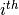 integer represents the activity of the component that is at the position in the sorted list of component names. Returns: A list of successor states of the asynchronous and unitary state transition graph of the current parametrization. Return type: List of States.
- Model.synchronous_successor(State)¶
Parameters: State (List of integers) – Contains one integer for each component of the regulatory graph. The integer represents the activity of the component that is at the position in the sorted list of component names. Returns: The successor state of the synchronous and unitary state transition graph of the current parametrization. Return type: A State.
- Model.update_Function(State)¶
Parameters: State (List of integers) – Contains one integer for each component of the regulatory graph. The integer represents the activity of the component that is at the position in the sorted list of component names. Returns: The successor state of the synchronous and non-unitary state transition graph of the current parametrization. Return type: A State.
- Model.target_values(StateFormula, Component)¶
Parameters:
- StateFormula (String) – A state formula.
- Component (String) – The component used for parameter reference.
Returns: Target values of the referenced parameters of current parametrization .
Return type: List of integers
- Model.inequality_abs(StateFormula, Component, Operator, Activity)¶
Parameters:
- StateFormula (String) – A state formula.
- Component (String) – The component used for parameter reference.
- Operator (String) – One of '<','<=','=','>=','>','!='.
- Activity (Integer) – An activity.
Returns: Whether the current parametrization satisfies the inequality_abs predicate with the given arguments.
Return type: Boolean
- Model.inequality_rel(StateFormula1, Component1, Operator, StateFormula2, Component2)¶
Parameters:
- StateFormula1 (String) – The left-hand side state formula.
- Component1 (String) – The component for left-hand side parameter reference.
- Operator (String) – One of '<','<=','=','>=','>','!='.
- StateFormula2 (String) – The right-hand side state formula.
- Component2 (String) – The component for right-hand side parameter reference.
Returns: Whether the current parametrization satisfies the inequality_rel predicate with the given arguments.
Return type: Boolean
- Model.identity(Quantifier, StateFormula, Component, Operator, Activity)¶
Parameters:
- Quantifier (String) – One of 'All','Some'
- StateFormula (String) – A state formula.
- Component (String) – The component used for parameter reference.
- Operator (String) – One of '<','<=','=','>=','>','!='.
- Activity (Integer) – An activity.
Returns: Whether the current parametrization satisfies the inequality_abs predicate with the given arguments.
Return type: Boolean
- Model.multiplex(StateFormulas, Component)¶
Parameters:
- StateFormulas (List of strings) – The “compounds” of a multiplex.
- Component (String) – The component that is regulated by the multiplex.
Returns: Whether the current parametrization satisfies the multiplex predicate with the given arguments.
Return type: Boolean
- Model.edge_label(Label, Regulator, Target, Thresholds, StateFormula="True")¶
Parameters:
- Label (String) – One of 'Activating','ActivatingOnly','Inhibiting','InhibitingOnly','Observable'
- Threshold – The interaction threshold of the label.
- StateFormula (String) – The optional state formula that restricts the contexts must satisfy the constraint (see edge_label predicate). The default True enforces no restriction.
- Regulator (String) – The regulator component of the interaction.
- Target (String) – The target component of the interaction.
Returns: Whether the current parametrization satisfies the edge_label predicate with the given arguments.
Return type: Boolean
- Model.subgraph(Graph)¶
Parameters: Graph (Dictionary) – A successor-based representation of a subgraph of the unitary and asynchronous state transition graph. Each key of the dictionary is a state. The value of a key is a list of successor states. Returns: Whether the current parametrization satisfies the subgraph predicate with the given argument. Return type: Boolean
- Model.path(Path)¶
Parameters: Path (List of states) – A list of states, representing a path in the unitary and asynchronous state transition graph. Returns: Whether the current parametrization satisfies the path predicate with the given argument. Return type: Boolean
- Model.compare(Quantifier, StateFormula, Component, Operator)¶
Parameters:
- StateFormula (String) – A state formula.
- Quantifier (String) – One of 'All','Some'
- Component (String) – The component used for parameter reference.
- Operator (String) – One of '<','<=','=','>=','>','!='.
Returns: ...
Return type: ...
2.5. Custom Classifier Implementation Examples¶
2.5.1. Deterministic path classifier¶
As an example we will implement an algorithm that computes the length of a deterministic path starting in a given initial state.
A path 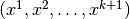 of the asynchronous transition graph is deterministic,
if for all 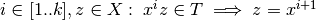. The length of such a path is  .
As we will see, this classifier serves as a good example for how custom algorithms are implemented, because it is simple, and makes use of most features of the interface.
We create a file called detpath.py which contains a single class called Classifier.
During initialization the Model is stored as an attribute, and the initial state is computed, depending on the number of components of the network. This is an example of hard-wiring the property information that the predefined classifiers get from text files (see Type 1, Type 2 and Type 3) into the algorithm.
In this example the initial state is the one, where every component is below all its thresholds, i.e., the zero state.
.
As we will see, this classifier serves as a good example for how custom algorithms are implemented, because it is simple, and makes use of most features of the interface.
We create a file called detpath.py which contains a single class called Classifier.
During initialization the Model is stored as an attribute, and the initial state is computed, depending on the number of components of the network. This is an example of hard-wiring the property information that the predefined classifiers get from text files (see Type 1, Type 2 and Type 3) into the algorithm.
In this example the initial state is the one, where every component is below all its thresholds, i.e., the zero state.
detpath.py:
class Classifier(object): def __init__(self, Model): self.property_name = 'dpzero' self.property_description = 'Computes the length of a deterministic path starting in the zero state.' self.data_type = 'integer' self.model = Model self.initial_state = [0 for i in Model.components]